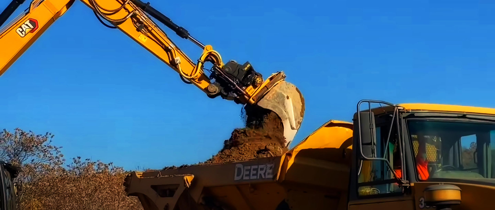
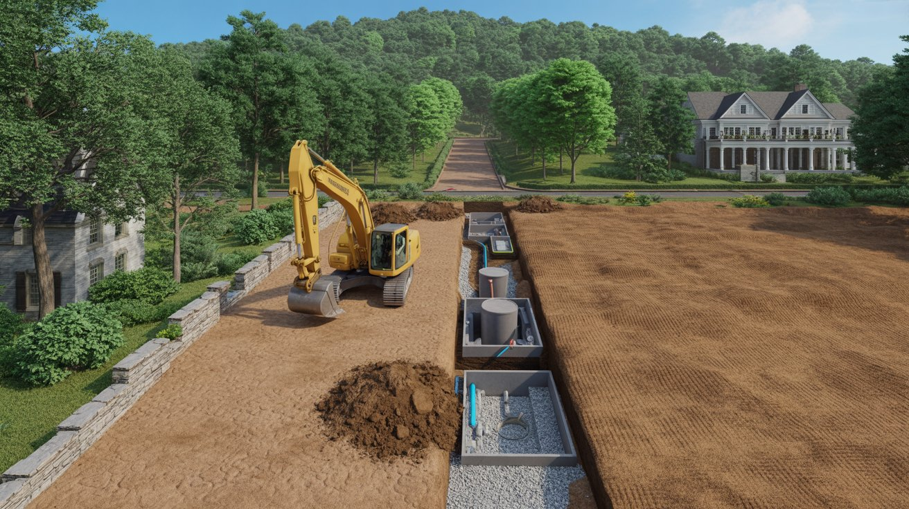
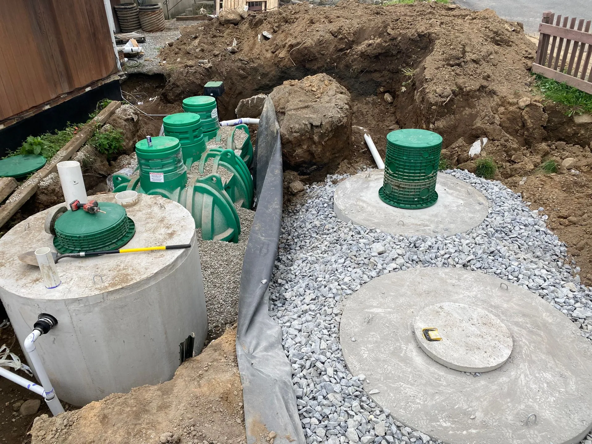
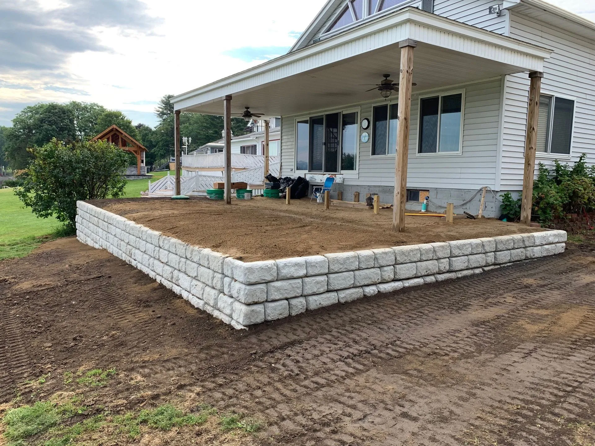
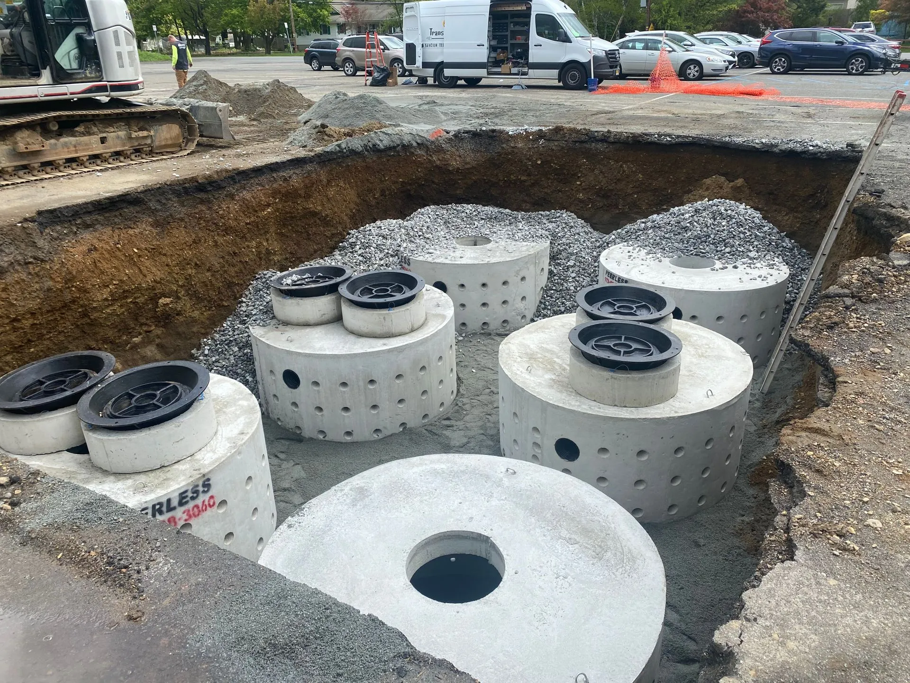

Septic installation
New systems designed from the soil log and set to grade, including raised mounds and advanced treatment units on lots that were called unbuildable.
Related pages
Open the page →

Northwest New Jersey sits on shallow bedrock, glacial till and a water table that moves with the season. A septic system specified from a desk fails here. We design from the soil log up.
Excavating New Jersey LLC is an owner-operated excavation and septic contractor based in Wantage, serving Sussex and northern Morris County for nearly 20 years. We design, permit and install septic systems to NJDEP Chapter 199 (N.J.A.C. 7:9A), and handle land clearing, drainage, sewer work and site excavation on rocky, high-water-table ground.
Shallow bedrock. Across much of Sussex County there is rock closer to the surface than a standard drainfield depth allows. That is not a problem you find out about halfway through a dig, it is a problem you design around before you submit.
Seasonal high water table. A lot that percolates fine in August can be saturated in April. New Jersey code measures for the wet season, not the convenient one.
Glacial till. Mixed, unpredictable, and it changes across a single property. Two test pits eighty feet apart can call for two different systems.
Slope and setbacks. Steep lots and lake-adjacent parcels near Lake Mohawk carry setback rules that quietly eliminate half the yard as a viable field location.
| Stage | What happens |
|---|---|
| Site evaluation | We walk the property, locate the existing system, and read the grade. No charge. |
| Soil testing | Test pits and permeability, witnessed as the health department requires. |
| Design | System specified to the soil log and the lot, not to a template. |
| Submission | Filed with the township and county health department. We chase it, you do not. |
| Installation | Built by the same outfit that designed it. |
| Final inspection | Signed off and documented for your records, lender or buyer. |




New systems designed from the soil log and set to grade, including raised mounds and advanced treatment units on lots that were called unbuildable.
Targeted fixes on a system that is failing rather than finished, from a flagged inspection to a drainfield that has stopped taking water.
Open the page →Soil logs, perc tests and stamped plans under NJDEP Chapter 199, prepared and carried through township permitting in house.
Open the page →Foundation digs, rock removal and grading cut to spec, plus the drainage and driveway work that decides whether the grade holds.
Open the page →Municipal tie-ins, line replacement and trenching backfilled to compaction, so the ground does not settle over the run.
Clearing lines and laterals without opening the ground, which is often the difference between a service call and an excavation.
Open the page →Steep grades, rock near the surface and lake setbacks. Designed for Sparta conditions from the first test pit.
Recent job: septic replacement for a home sale, Oct 2025
Equipment built for heavy glacial soil and rocky terrain.
Recent job: full septic replacement with design, Oct 2025
Projects throughout the county seat and surrounding townships.
Lake Hopatcong is the largest lake in New Jersey. Tight sloped lots close to the water table, where setbacks decide the design first.
Home base. Every soil type, every seasonal drainage pattern, every local inspector.
Recent job: septic repair and replacement, Aug 2024
The local choice for Lake Shawnee septic replacements on high-water-table lots.
Recent job: septic system replacement, Oct 2025
Smoke Rise takes serious equipment and clean work under strict access rules.
Green Pond Road to White Meadow Lake, iron-heavy soil that breaks lesser equipment.
Mound systems and curtain drains engineered for wet conditions near Budd Lake.
This is the call we take most often. The buyer's inspector flags the septic, the date is already on the contract, and every party in the sale is suddenly waiting on one repair.
The septic is rarely the hard part. The hard part is not knowing the number. So the number comes first, in writing, and it holds to your date.
Get a number that holds to closing day| Money question | Answer |
|---|---|
| Site evaluation | Free. We walk the lot and tell you repair or replacement. |
| Written estimate | Free, itemised, built to hand to a lender or an attorney. |
| Pay at closing | Available in many home sales, settled from the proceeds. |
| 203K loans | Documentation prepared to satisfy renovation-loan lenders. |
Not sure how to pay for it? Read our plain-English guide to 203K loans and pay-at-closing for a septic replacement.
That person is Mike White, the owner. He reads your soil log, and he is accountable for the number staying true. Nearly 20 years working this ground, with design, permitting and installation under one roof, so nothing is lost between a salesman and a crew.
We had an offer on the house in December under the condition we replace the septic. Excavating New Jersey worked diligently through the holidays and multiple snow storms and sensitive neighbors and demanding inspectors from both the town and county to get the job done… A total pro. Highly recommend.
They handled everything. Engineering of the septic system, acquiring all the needed permits and inspections… Mike is also a true owner operator, he didn’t just send a crew of guys to do the work he was in the machine right alongside his crew getting the job done.
They were professional, efficient, and clearly knew what they were doing. The work was done on time and to a very high standard. The stone walls look amazing, and everything was handled with care and attention to detail.
Because the soil decides the design and the design decides the price. Anyone who gives you a firm figure before seeing the soil log is either guessing or planning to revise it later.
It is the New Jersey standard governing individual subsurface sewage disposal systems. It sets how soil is tested, how systems are sized and what separations are required. Every design we submit answers to it.
Start with a site evaluation so you know whether it is a repair or a replacement, and how long the health department will take. Both answers are free, and both change how you handle the sale.
Sometimes, and we will tell you when that is the case. A camera inspection and a look at the field often settle it quickly.
Yes. Soil logs, perc tests, design, TWA permits, health department approval and final sign-off under NJDEP Chapter 199.
Yes. We own heavy-duty hydraulic breakers for exactly this ground, from Smoke Rise granite to the iron-heavy rock around Rockaway Township. Rock changes the plan and the price, and the written estimate spells that out before we start.
Yes. We install advanced treatment systems, including Singulair Green units, where lots are tight or environmentally sensitive.
Yes. We build commercial septic and site work across Sussex and northern Morris County, from Route 23 businesses to larger developments, with engineering and TWA permitting handled in house.
A site evaluation and a written estimate cost nothing. What they buy you is a number you can plan around.